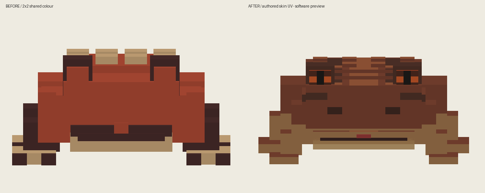
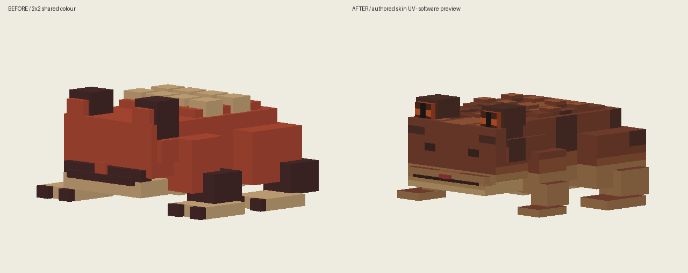
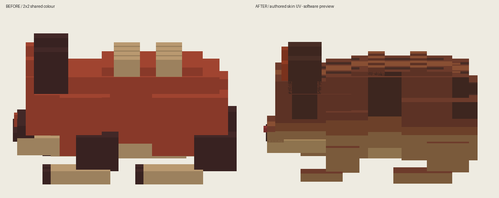
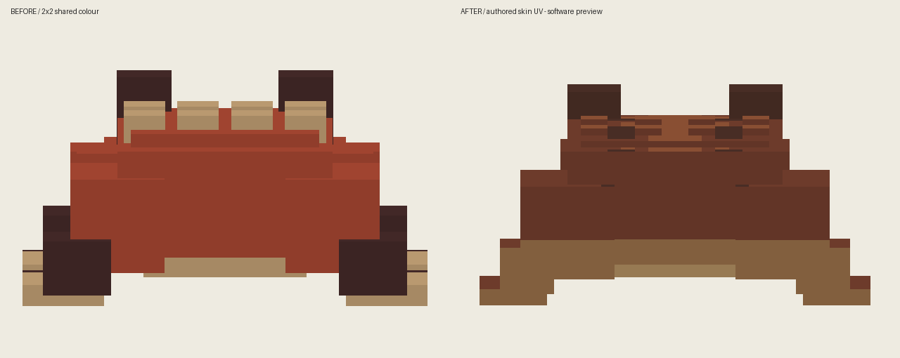
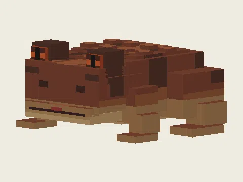
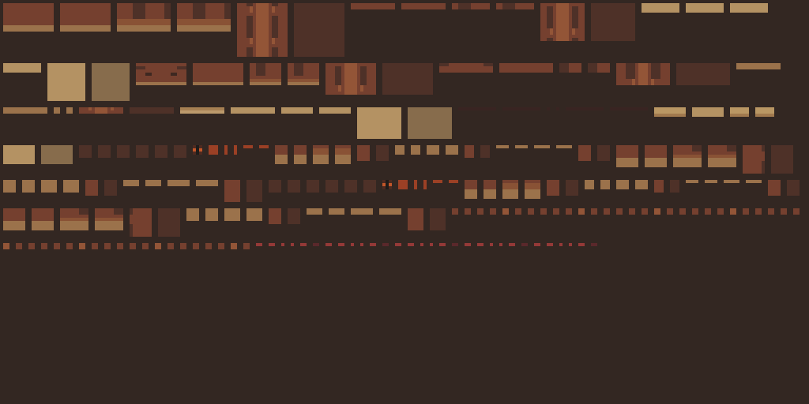
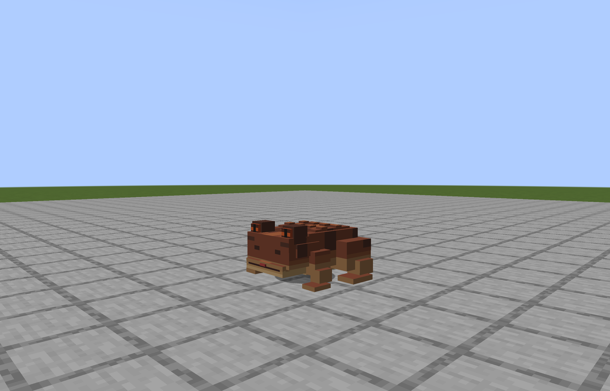

软件逐面PNG预览，不是游戏截图。旧版左，新版右；相同视角、共同包围范围与相同像素比例。






参考：Alex’s Mobs 雨蛙的短颈连续身体与背腹色区。没有复制原纹理。1000项模型+贴图研究仍未完成。
Java17构建通过。真实客户端正面、45度及重载再绘通过；8段完整动作仅作软件回放，尚未完成自然战斗验收。

alexsmobs:rain_frog 作者展示 · 原始PNG
已看作者雨蛙截图、64px原始PNG、模型构造。身体与嘴部连为主体，短肢嵌入身体；腹部亮带与背部成组深斑分开。
alexsmobs:cave_centipede 作者展示 · 原始PNG
已看作者暗处展示与原始PNG。截图暗部不足以判断全部细节；原图有甲节平面分区与关节暗色。